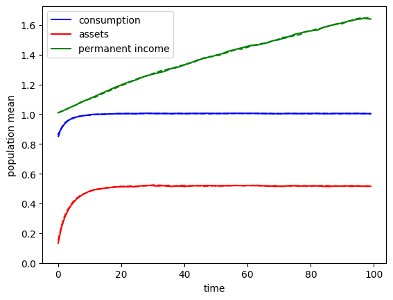
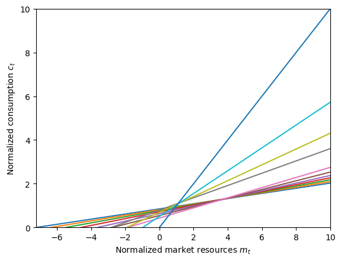
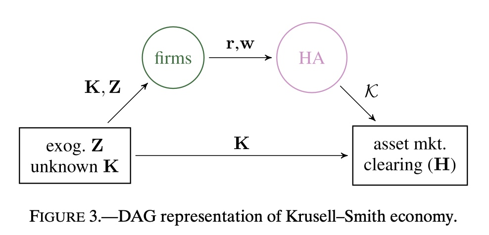
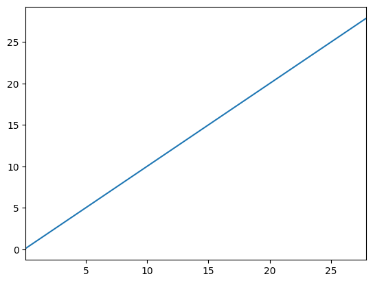
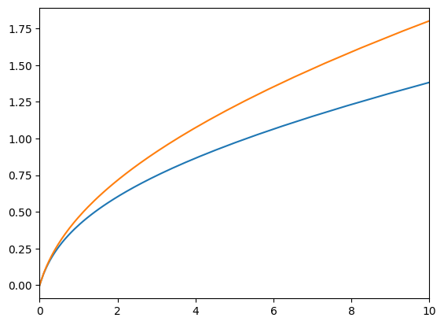
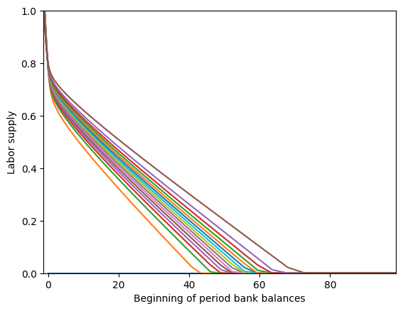
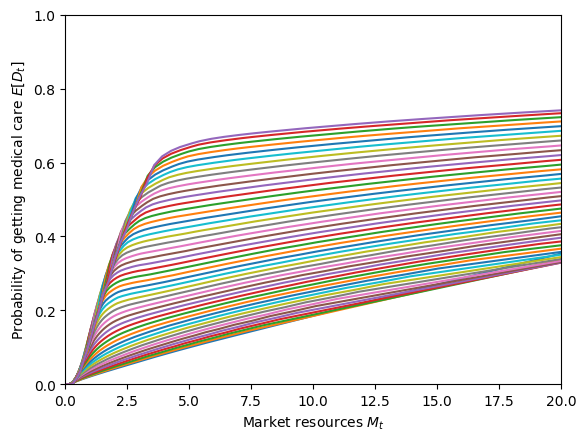

Overview#
Introduction to HARK
Learning About HARK

A Gentle Introduction to HARK

Simulating Microeconomic Models

The Nature of Time for AgentTypes

Constructed Attributes and Model Defaults

Advanced and Uncommon HARK Concepts

Numeric Methods Commonly Used in HARK

Directory of Consumption-Saving Models

Elements of an AgentType Subclass

“Macroeconomic” Models: the Market Class

The Sequence Space Jacobian (SSJ) method

Making HA-SSJ Matrices with HARK

Advanced Examples of HA-SSJ’s

Journey: Economics PhD Student
Consumption-Saving Models

Perfect Foresight Model

Tractable Buffer Stock Model

Representative Agent Models

Permanent and Transitory Income Shocks

Higher Interest Rate to Borrow than Save

Discrete State with Markov Transitions

Generalized Income Process

Aggregate Productivity Shocks

Warm-Glow Bequest Motive

Warm-Glow Bequest Motive and Portfolio Choice

Wealth-in-Utility Multiplicatively with Consumption

Wealth-in-Utility Additively with Consumption

Assets with Risky Returns: Portfolio Choice

Advanced Options for Portfolio Allocation

Portfolio Allocation with “Sequential Solvers”

Multiplicative Wealth-in-Utility with Portfolio Choice

Intensive Margin Labor Supply Choice

Preference Shocks to Consumption Utility

Basic Health Investment

Medical Care on the Intensive Margin

Medical Care on the Extensive Margin

“Risky Contribution” Model
Examples